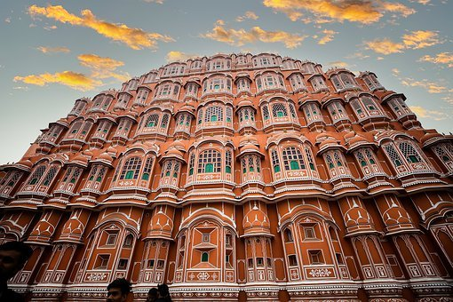

Places

Jaipur
Jaipur is the capital of India’s Rajasthan state. Planned by Vidyadhar Bhattacharya, Jaipur holds the distinction of being the first planned city of India. Renowned globally for its coloured gems, the capital city of Rajasthan combines the allure of its ancient history with all the advantages of a metropolis. The bustling modern city is one of the three corners of the golden triangle that includes Delhi, Agra and Jaipur.
Jaipur is a place not less than a paradise. It is impossibly romantic and picturesque, decked with royal palaces atmospheric Havlies, eclectic museums, and ancient towering temples. It is more than just a city. It is not wrong to say that Jaipur as a city is the soul of Indian culture. Fusion of old and modern, Chaotic yet tranquil welcoming and hospitable Jaipur is the beating heart of Rajasthan Tourism.
Jaipur Tourism has something to offer to everyone; colourful melange of magnificent forts and palaces to feel the royal bliss; colourful bazaars and delightfully chaotic streets full of life for those who wants to explore the local life of Jaipur; wildlife and adventure activities to dance in thrill and excitement and repository of divine temples for those looking for solace and spiritual bliss.
Top Places:
Hawa Mahal City Palace Museum Jal MahalManali
Manali is a high-altitude Himalayan resort town in India’s northern Himachal Pradesh state. It has a reputation as a backpacking center and honeymoon destination. Set on the Beas River, it’s a gateway for skiing in the Solang Valley and trekking in Parvati Valley. It's also a jumping-off point for paragliding, rafting and mountaineering in the Pir Panjal mountains, home to 4,000m-high Rohtang Pass. With the views of the snow-capped mountains in the distance and surrounded by the refreshing and lush deodar and pine forests, Manali seems to have been lifted straight from a page out of a picture book.
Manali has much to offer in terms of sights and activities. Tourists who are here to enjoy the quiet beauty of this hill station will not be disappointed because looking out over the stunning Himalayas is a treat for the eyes. Misty forests, snow-capped mountains and other such delights make it all the more perfect.
The presence of several temples here also makes it a religious tourism spot, with many people coming here to visit the temple of Hidimba Devi or the Manu temple.Since Manali is home to a large Tibetan population, it is not surprising to see colourful Tibetan monasteries here as well. These are in fact rather crucial to Manali tourism as many tourists come here. There’s also a good opportunity to pick up Tibetan art and crafts here, which adds to its popularity.
Top Places:
Local Resorts Dhauldar Ranges Brahmaputra RiverKochi
Kochi (also known as Cochin) is a city in southwest India's coastal Kerala state. It has been a port since 1341, when a flood carved out its harbor and opened it to Arab, Chinese and European merchants. Sites reflecting those influences include Fort Kochi, a settlement with tiled colonial bungalows and diverse houses of worship. Cantilevered Chinese fishing nets, typical of Kochi, have been in use for centuries.
Kochi has an overabundance of scenic beauty and dramatic landscapes and it is extremely charismatic. Welcomed by breathtaking backwaters, Kochi is a prime tourist destination in Kerala and hence it is better known as Kerala's most metropolitan city. Kochi is an enchanting city that has an electrifying influence of the Arabs, British, Chinese and Portuguese intriguing mix culture and architecture.
Kochi is surrounded by palm groves, green field, inland lakes, and backwaters that have enchanted visitors from across the globe for centuries.Gulp great food, be a part of authentic shopping and sail on the backwater. The true experience is going to Kochi, amazing delight, soothing massages, picnic on the beach and treasure troves of the temple, one can encounter all this only in Kochi.It is evident that who so ever will visit Kochi you will encounter popular tourism attraction of the beckoning past of heritage and culture.
Top Places:
Panoramic River View Houseboats in Alleppey Arabian SeashoreGuwahati
Famously regarded as the gateway to North-East India, Guwahati is the largest city in the state of Assam. It is also the largest metropolis in the entire North-Eastern region of India, making it the most preferred staging point to other destinations in the region. Sandwiched by the river Brahmaputra on one side and the Shillong Plateau on the other, this city was formerly known as Pragjyotishpura. The name Guwahati is derived from the union of two Assamese words - ‘Guwa’ meaning Areca Nut and ‘Haat’ meaning market.
Millions of people each year traverse through the city for their livelihood, travels or for religious purposes. Kamakhya Temple, located at the top of the Nilachal Hill and dedicated to Goddess Kamakhya, plays host to thousands of devotees each day. Lakhs of pilgrims and tourists throng to this holy site during the Ambubachi Mela each year. Apart from the Temple of Kamakhya, other sacred temples such as Umananda and Navagraha are also present in the city.
Guwahati has been one of the frontrunners in terms of Education in the North-Eastern Region of India. The recent influx of more students and scholars has led to the betterment of infrastructure and modern-day amenities in the city. The two major roads - G.S Road and R.G Baruah Road, houses many malls, restaurants and theatres, thus forming the major entertainment and shopping hub in this rising cosmopolitan.